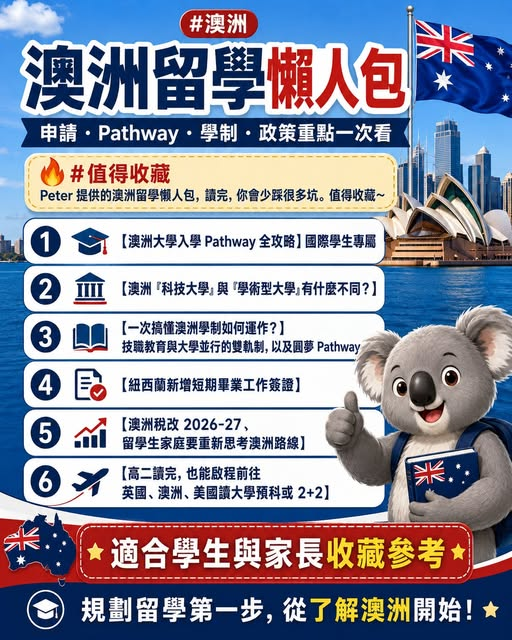

《看懂制度，選對世界》第一集
留學實戰精華：澳洲篇
Peter 提供的澳洲留學懶人包，讀完，你會少踩很多坑。值得收藏~ 如果你正在規劃澳洲留學，不管是想了解澳洲大學 Pathway、澳洲學制、科技大學與學術型大學差異，或是關心留學生家庭稅務、畢業工作簽證與高二後銜接海…

【留學實戰精華 澳洲篇】 Peter 提供的澳洲留學懶人包，讀完，你會少踩很多坑。值得收藏~ 如果你正在規劃澳洲留學，不管是想了解澳洲大學 Pathway、澳洲學制、科技大學與學術型大學差異，或是關心留學生家庭稅務、畢業工作簽證與高二後銜接海外升學，這幾篇文章都很適合先收藏起來慢慢看。 【澳洲大學入學 Pathway 全攻略】國際學生專屬 【澳洲「科技大學」與「學術型大學」有什麼不同？】 【一次搞懂澳洲學制如何運作？】技職教育與大學並行的「雙軌制」，以及圓夢 Pathway 【紐西蘭新增短期畢業工作簽證】 2026-27，留學生家庭要重新思考澳洲路線 】 2+2 】